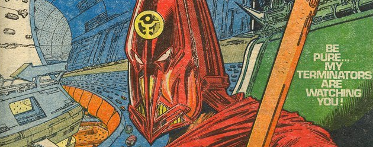

Torquemada (an evil human supremacist and ruler of a dystopian future Earth) has his main narrative arc as the arch-enemy of Nemesis the Warlock, but also had a few stories under his own banner.
Art by Kevin O'Neill
| Story Title | Parts | Pages | w indicates a wraparound coverCovers | Year(s) | Issues | Writer | Artist | Colourist | Letterer |
|---|---|---|---|---|---|---|---|---|---|
Linked to Nemesis the Warlock No supertitleA Day in the Death of Torquemada | 1 | 4 | 0 | 1983 | Reprints: B2KSE22KA'84 | Pat Mills | Kevin O'Neill | [b&w] | Steve Potter |
Linked to Nemesis the Warlock A choose‑your‑own adventure comic. Supertitled "You Are Torquemada trapped in..." The Garden of Alien Delights | 1 | 20 | 0 | 1986 | DM3 | Pat Mills | Bryan Talbot | [b&w] | Mark King |
Linked to Nemesis the Warlock No supertitle.Torquemada the God | 5 | 25 | 523: Kevin O'Neill 1 | 1987 | 520-524 | Pat Mills | Kevin O'Neill | [b&w] | Steve Potter |
Linked to Nemesis the Warlock No supertitle.Torquemada's Second Honeymoon | 1 | 6 | 0 | 1987 | 2KA'88 | Pat Mills | Kevin O'Neill | <-- | Steve Potter |
| >> Posters / Teasers << | |||||||||
Linked to Nemesis the Warlock Star Pin‑Up.Torquemada | 1 | 1 | 0 | 1980 | 184 | n/a | Kevin O'Neill | <-- | n/a |
Linked to Nemesis the Warlock Star Pin‑Up.Official Gondola | 1 | 1 | 0 | 1980 | 195 | n/a | Kevin O'Neill | <-- | n/a |
Linked to Nemesis the WarlockThe Family of Tomas de Torquemada | 1 | 1 | 0 | 1982 | Reprints: 2KA'90 [b&w]250 | n/a | Kevin O'Neill | <-- | n/a |
Linked to Nemesis the WarlockTorquemada ... a very pure Xmas… | 1 | 1 | 0 | 1982 | 296 | n/a | Kevin O'Neill | <-- | n/a |
Linked to Nemesis the Warlock Star Pin‑Up."Sleep is no refuge..." | 1 | 1 | 0 | 1983 | 318 | n/a | Kevin O'Neill | <-- | n/a |
Linked to Nemesis the Warlock Annual contents page.Contents [Torquemada] | 1 | 1 | 0 | 1984 | 2KA'85 | n/a | Kevin O'Neill | <-- | n/a |
Linked to Nemesis the Warlock Star Pin‑Up.The Tomb of Torquemada | 1 | 1 | 0 | 1985 | 419 | n/a | Bryan Talbot | <-- | n/a |
Linked to Nemesis the WarlockTorquemada | 1 | 1 | 0 | 1985 | 430 | n/a | Kevin O'Neill | <-- | n/a |
Linked to Nemesis the WarlockTorquemada the God | 1 | 1 | 0 | 1987 | 511 | Pat Mills | Kevin O'Neill | [b&w] | n/a |
Linked to Nemesis the WarlockTorquemada: Grand Master of Termight | 1 | 1 | 0 | 1987 | 522 | n/a | Kevin O'Neill | [b&w] | n/a |
Linked to Nemesis the Warlock Star Scan.[Torquemada] | 1 | 1 | 0 | 1988 | 603 | n/a | Nigel Dobbyn | <-- | n/a |
| year | episodes | pages |
| 1977 | 0 | 0 |
| 1978 | 0 | 0 |
| 1979 | 0 | 0 |
| 1980 | 0 | 0 |
| 1981 | 0 | 0 |
| 1982 | 0 | 0 |
| 1983 | 1 | 4 |
| 1984 | 0 | 0 |
| 1985 | 0 | 0 |
| 1986 | 1 | 20 |
| 1987 | 6 | 31 |
| 1988 | 0 | 0 |
| 1989 | 0 | 0 |
| 1990 | 0 | 0 |
| 1991 | 0 | 0 |
| 1992 | 0 | 0 |
| 1993 | 0 | 0 |
| 1994 | 0 | 0 |
| 1995 | 0 | 0 |
| 1996 | 0 | 0 |
| 1997 | 0 | 0 |
Comic strip data (excludes other content):